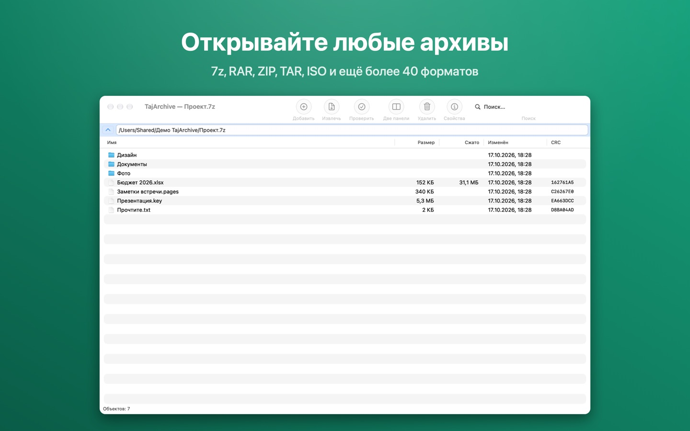
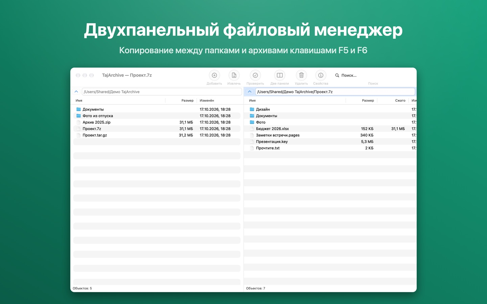
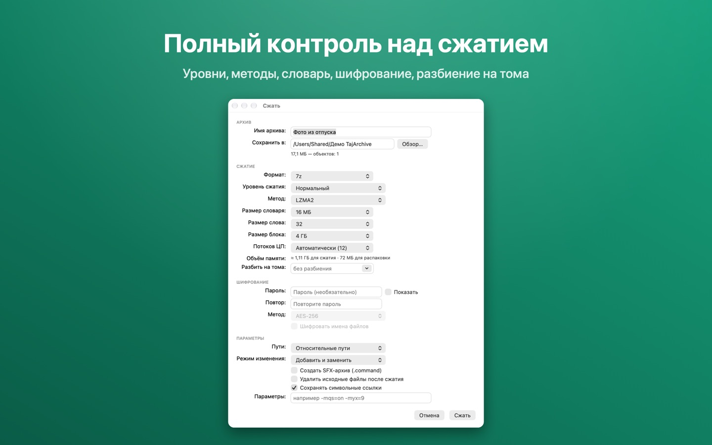
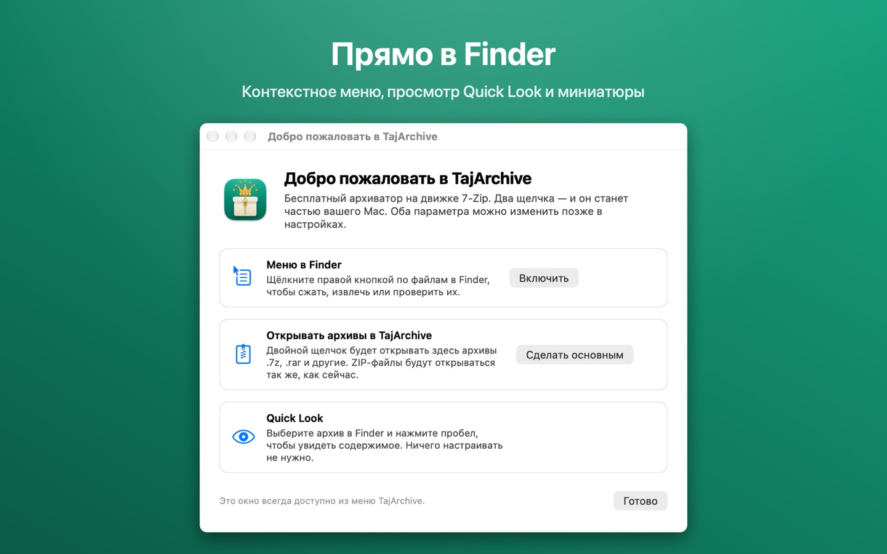

TajArchive
Бесплатный архиватор с открытым исходным кодом для macOS на движке 7-Zip. Открывает 7z, RAR, ZIP и ещё более 40 форматов прямо из Finder.
Бесплатно. Без рекламы, слежки и регистрации. macOS 12 Monterey и новее, Apple silicon и Intel.

Всё, что должен уметь архиватор
Открывает более 40 форматов
7z, RAR, ZIP, TAR, GZip, BZip2, XZ, Zstandard, LZ4, CAB, ARJ, LHA, WIM, ISO, DMG, DEB, RPM и другие — а командой «Открыть как архив» любой контейнер.
Создаёт популярные архивы
7z, ZIP, TAR, GZip, BZip2, XZ и Apple Archive — с разбиением на тома, шифрованием AES-256 и самораспаковывающимися архивами.
Встроен в Finder
Контекстное меню для сжатия, извлечения, проверки и контрольных сумм; просмотр содержимого через Quick Look; миниатюры с числом файлов.
Двухпанельный менеджер
Папки и архивы рядом; копирование и перемещение между ними клавишами F5 и F6 — как в привычном 7-Zip для Windows.
Полный контроль над сжатием
Уровень, метод, словарь, размер слова, непрерывные блоки, потоки, режимы обновления — и оценка нужной памяти.
На вашем языке
Полностью на русском, таджикском и английском; меню и диалоги ещё на 87 языках из переводов 7-Zip.
Снимки экрана



Открытый код
GNU LGPL
TajArchive и его исходный код свободно распространяются по лицензии GNU LGPL. Вклад в код, переводы и сообщения об ошибках — на GitHub.
На движке 7-Zip
Сжатием занимается движок 7-Zip Игоря Павлова (7-zip.org). TajArchive — независимый проект и не связан с 7-Zip. Использованный исходный код 7-Zip.